Am Huangpu-Fluss stehen alte Häuser und hohe Türme. Am Suzhou-Fluss wird die Stadt leiser: Brücken, Lagerhäuser, Bäume und neues Licht.
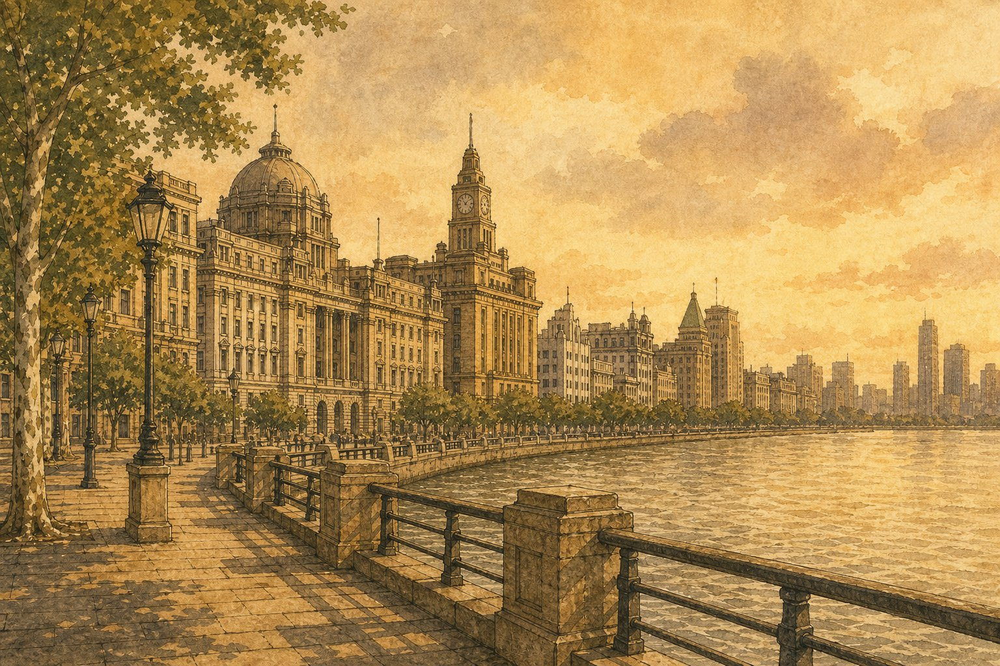
Shanghai steht am Wasser. Am Bund siehst du alte Häuser. Auf der anderen Seite leuchten hohe Türme. Ein paar Straßen weiter wird die Stadt kleiner: Fenster, Wäsche, Stimmen, Nudeln und heiße Teigtaschen. So ist Shanghai groß und nah zugleich.
Neun Stationen durch Shanghai: alte Fassaden, hohe Türme, ein kleiner Fluss, Gärten, Platanen, junge Menschen und Arbeit an der Zukunft.
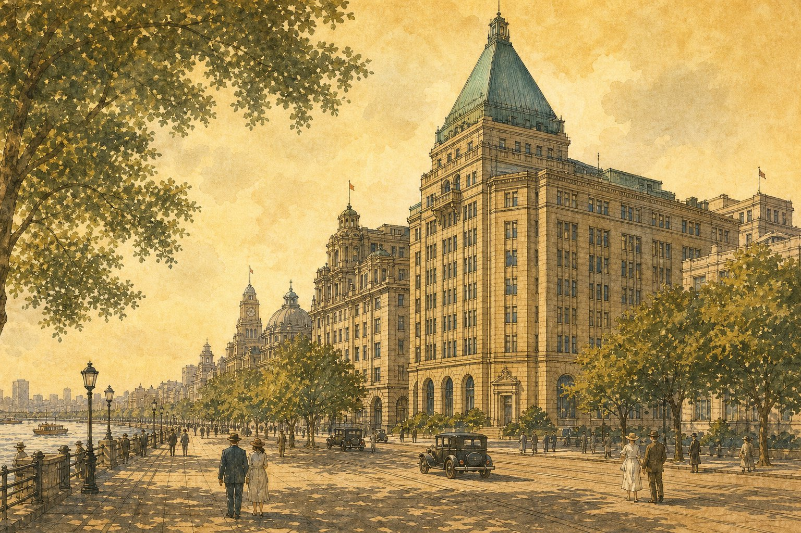
Am Bund steht ein altes Hotel mit grünem Dach. Es erinnert an Musik, Licht und eine andere Zeit.
Das Gebäude braucht kein großes Schild. Seine Form, das Dach und die Lage am Wasser erzählen von Haipai-Shanghai: alt, offen und ein wenig elegant.
Über dem Fluss stehen die Türme hoch. Sie zeigen das moderne Shanghai, aber sie sind nur eine Seite der Stadt.
Die Türme leuchten am Abend. Auf dieser Seite sind sie kein Finanzplakat, sondern ein Blick über Wasser: groß, hell und weit.
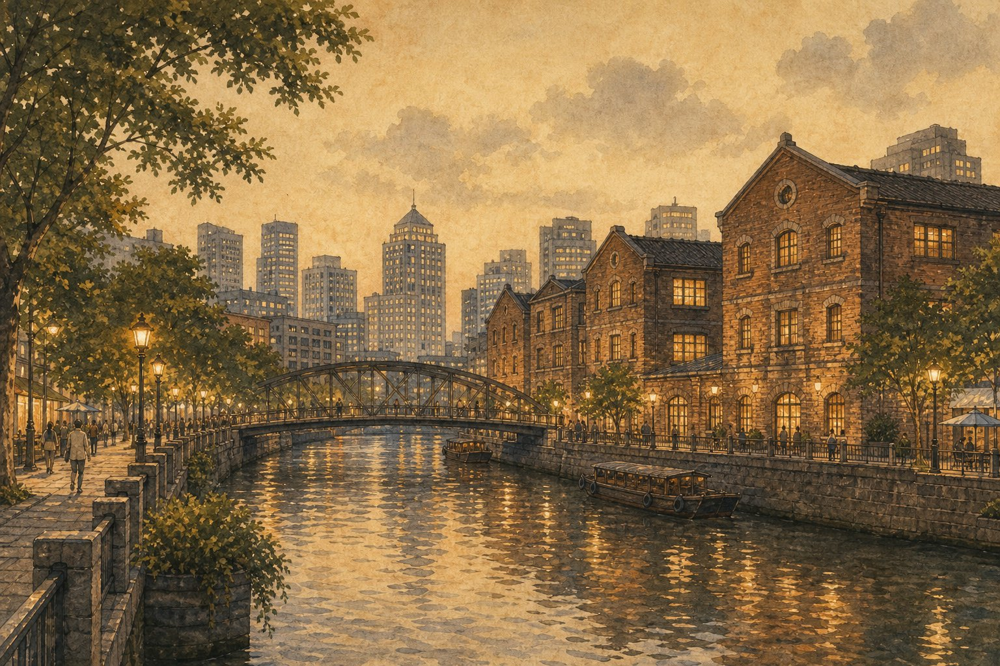
Am Suzhou-Fluss ist Shanghai leiser. Brücken, alte Häuser und neues Licht stehen nebeneinander.
Dieser Fluss ist kleiner als der Huangpu. Genau deshalb ist er wichtig: Hier sieht man Wandel aus der Nähe, an Ufern, Brücken und alten Lagerhäusern.
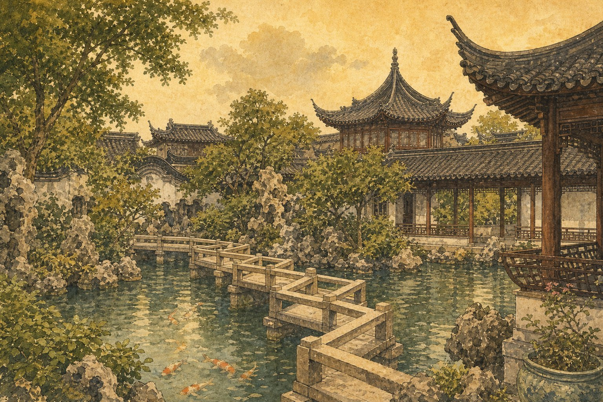
Nach den hohen Häusern kommt ein Garten. Wasser, Brücken und Dächer machen die Stadt ruhiger.
Der Garten zeigt die Jiangnan-Wurzel von Shanghai. Man geht langsam über eine Brücke, sieht Steine und hört Wasser.
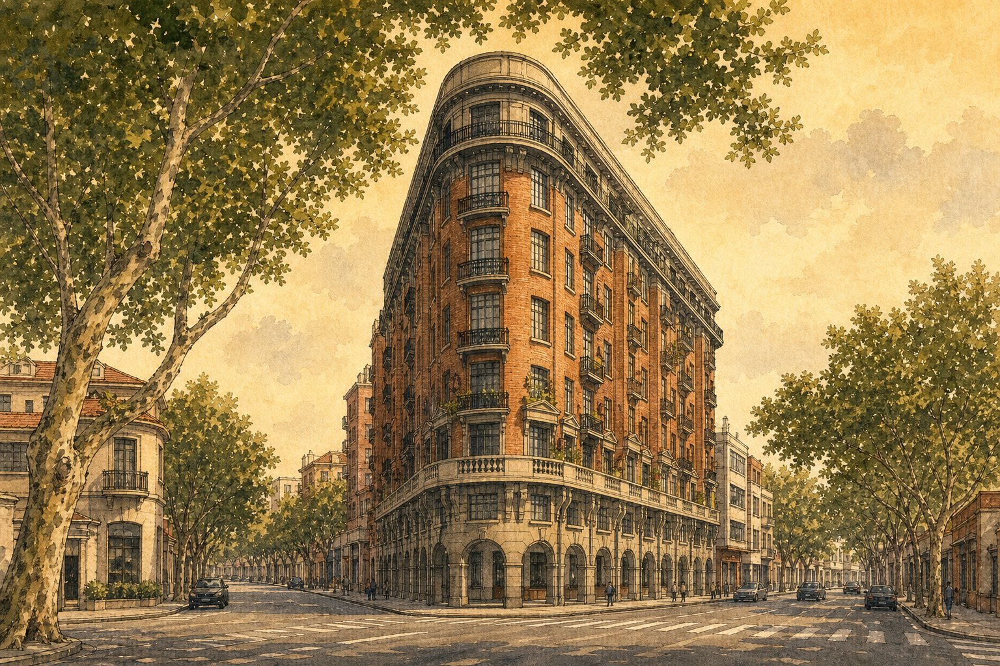
Unter Platanen steht ein rotes Haus wie ein Schiff. Die Straße wird eng, schön und sehr shanghaierisch.
Das Wukang-Gebäude ersetzt hier das Museum. Es ist stärker als Bild: rote Ziegel, eine spitze Ecke und Straßen, die zusammenkommen.
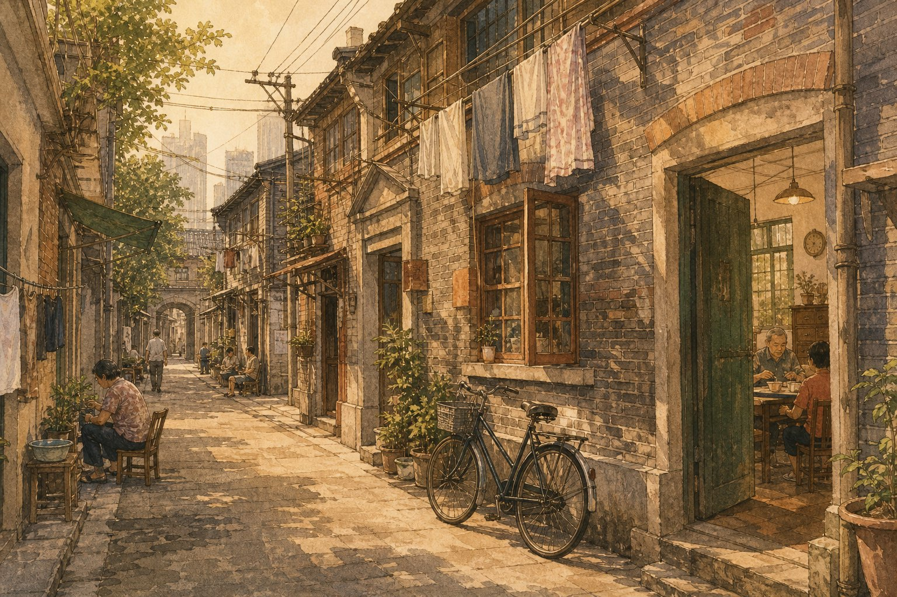
In den Gassen ist Shanghai klein. Man sieht Fenster, Wäsche und Fahrräder. Man hört Schritte und Stimmen.
Lilong ist kein großes Denkmal. Es ist Alltag: Türen, Nachbarn, Schatten und ein Weg, der direkt am Leben vorbeigeht.
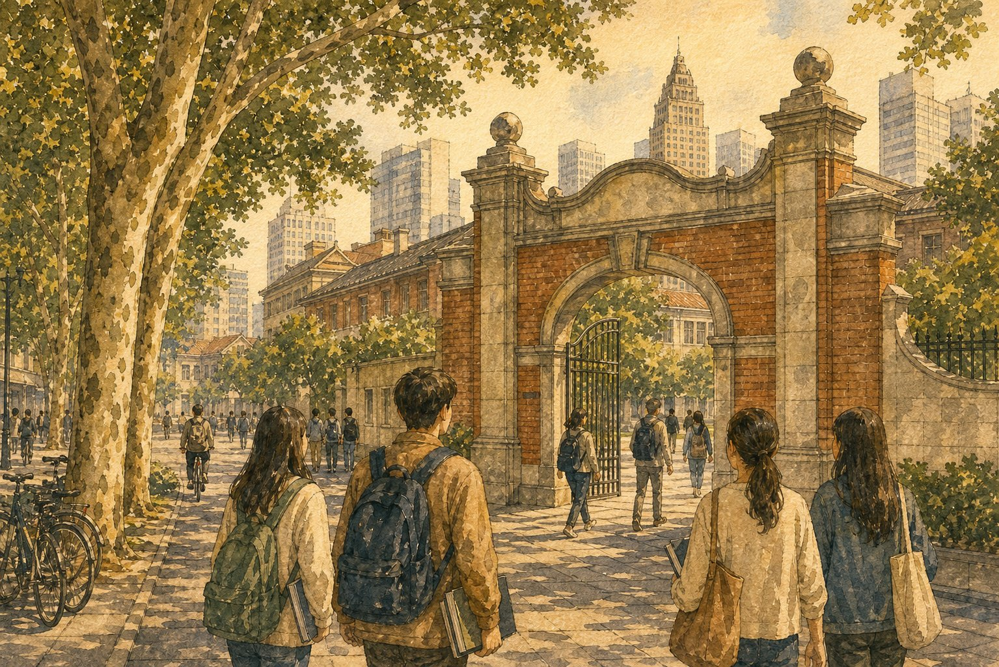
Junge Menschen gehen unter Bäumen. Bücher, Fahrräder und hohe Häuser gehören hier zusammen.
Shanghai ist nicht nur alt und nicht nur modern. In den Universitäten lernt die Stadt weiter. Das Bild bleibt ohne Namen, aber mit Stadtgefühl.
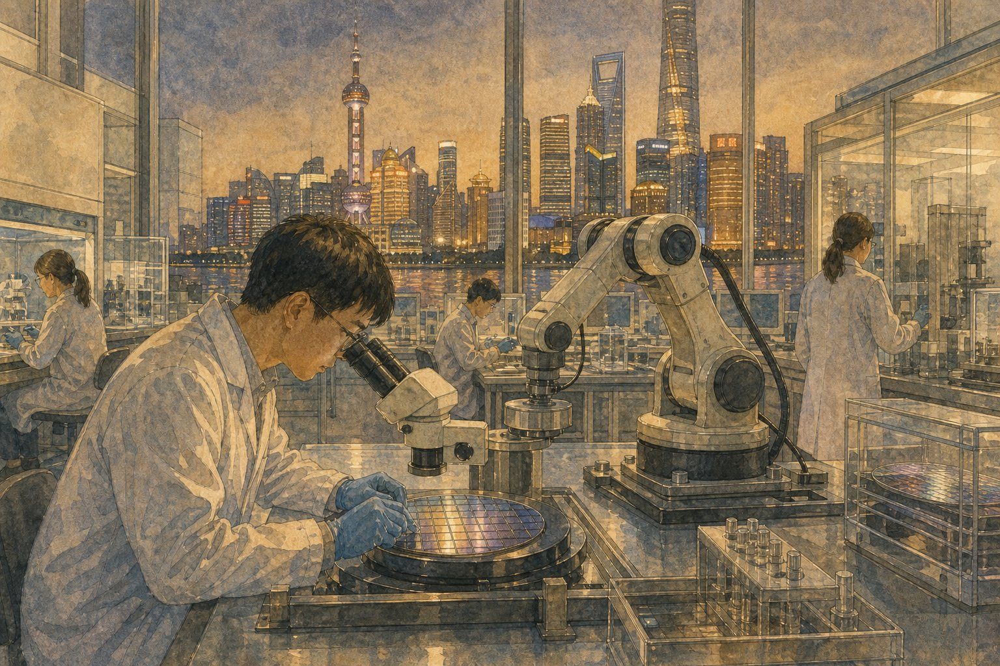
Im Labor ist die Stadt sehr genau. Ein Roboterarm arbeitet, draußen leuchtet Shanghai weiter.
Hightech wird hier nicht als blaue Fantasie gezeigt. Es bleibt ein Raum mit Arbeit, Licht, Werkzeugen und der Stadt vor dem Fenster.
Shanghai schmeckt nach Suppe, Knusperboden, Frühlingszwiebel-Öl, brauner Sauce und einem süßen runden Schluss.
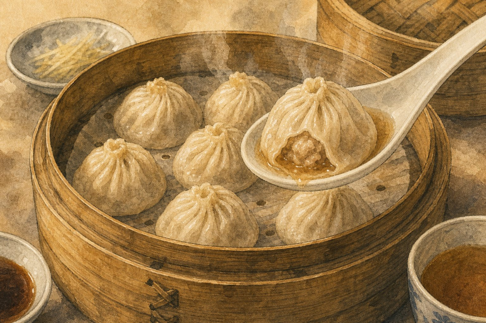
Die Knödel sind klein. Innen wartet heiße Suppe. Ein Löffel hilft.
Iss langsam. Erst kommt der Dampf, dann die Brühe, dann der Teig. Genau darin liegt der Shanghai-Geschmack.
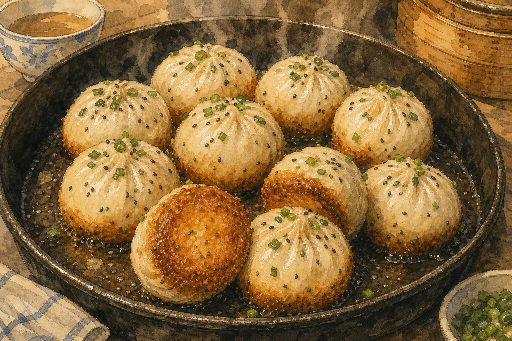
Unten sind sie knusprig, oben weich. In der Pfanne duftet es heiß.
Shengjianbao knackt unten in der Pfanne. Warte kurz, denn innen kann die Suppe sehr heiß sein.
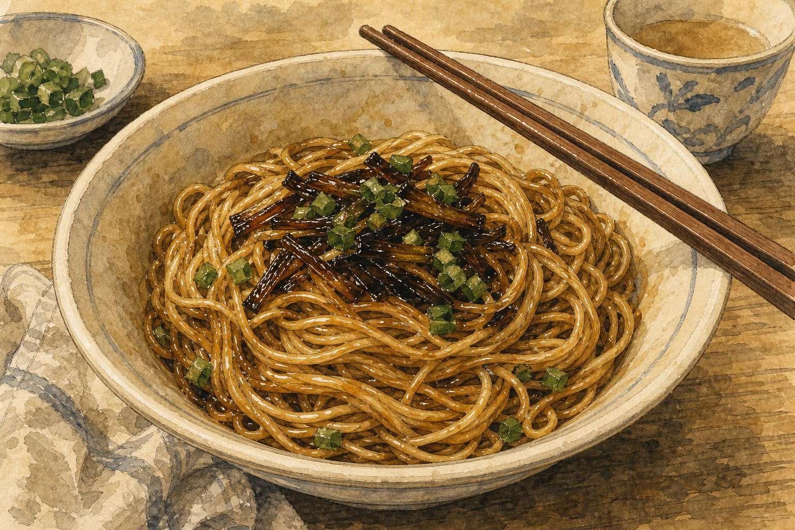
Die Nudeln sind einfach. Öl, Soja und Frühlingszwiebeln machen sie warm und dunkel.
Dieses Essen ist nicht laut. Es riecht stark nach Frühlingszwiebel und bleibt sehr alltaglich.
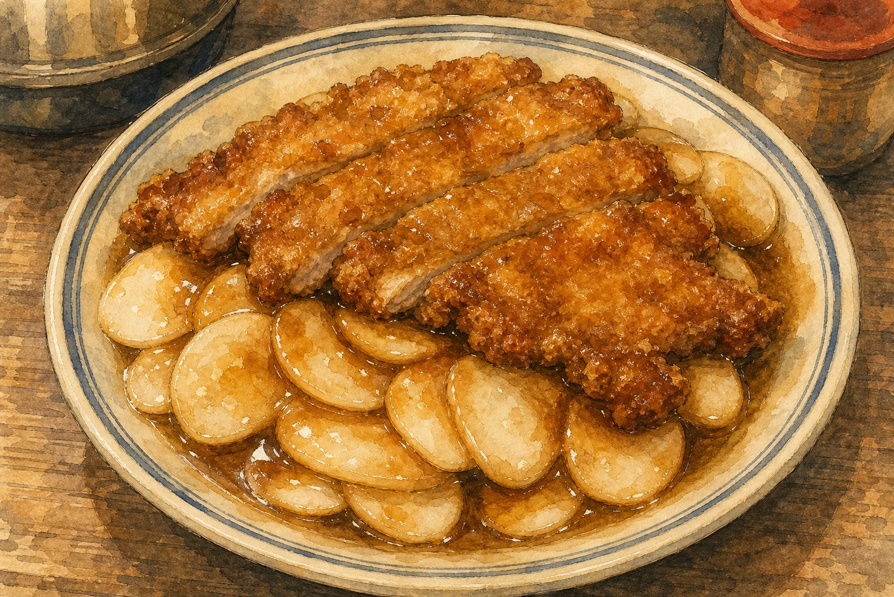
Auf dem Teller liegen weiche Reiskuchen und ein warmes Kotelett mit Sauce.
Reiskuchen und Kotelett zusammen sind ein starker Shanghai-Anker. Das Gericht bringt die große Stadt zurück zu einem heißen Teller.
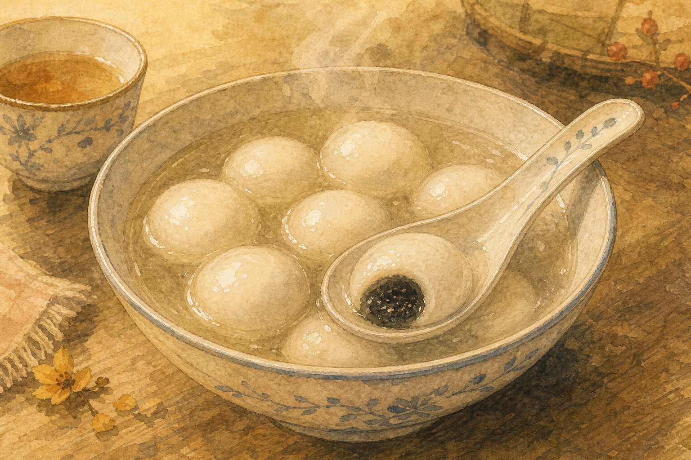
Am Ende wird es rund und süß. Die weißen Bällchen liegen in warmer Suppe.
Tangyuan ist weich und freundlich. Nach Fluss, Straße und Labor gibt es einen ruhigen Schluss.
Kurze Wörter für Wasser, Straße, Essen und Stadtlicht. Tippen zum Umklappen.
Diese Sätze sind kurz und passen zu Shanghai.
Ich stehe am Huangpu-Fluss.我站在黄浦江边。
Am Suzhou-Fluss ist es leiser.苏州河边更安静。
Die Türme sind sehr hoch.这些楼很高。
Die Gasse ist klein und warm.弄堂小而温暖。
Bitte langsam essen.请慢慢吃。
Die Teigtasche ist heiß.这个包子很烫。
Drei kleine Fragen. Wähle eine Antwort.
1. Welcher zweite Fluss macht Shanghai leiser?
2. Was sieht aus wie ein Schiff an einer Ecke?
3. Was ist unten knusprig?
Shanghai bleibt wie Licht auf dem Fluss. Die Türme sind hoch, aber die Stimmen aus den Gassen sind nah. Zwischen beidem findest du die Stadt.